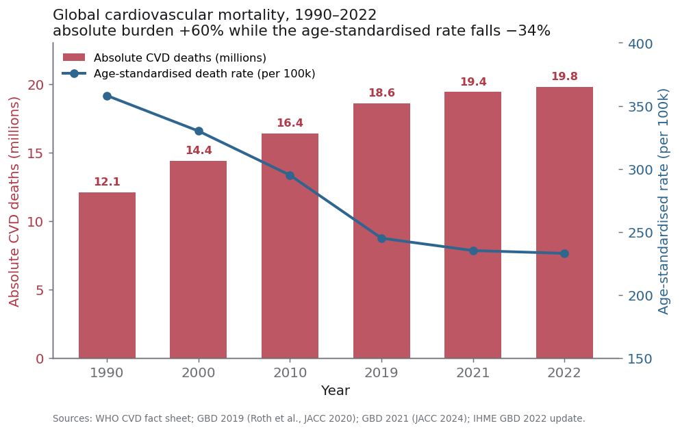
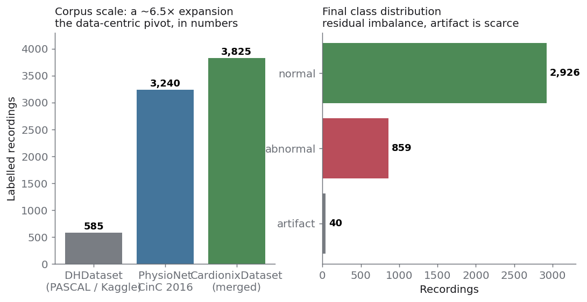
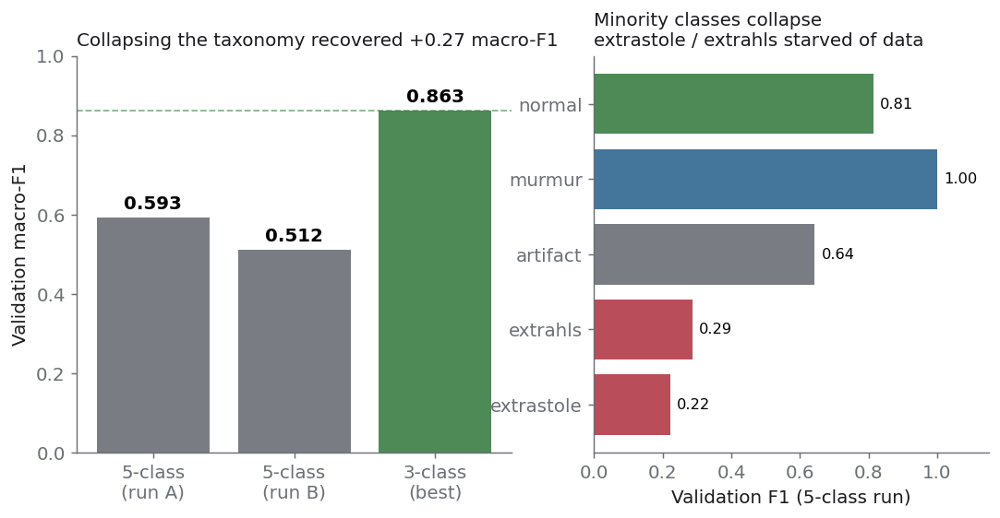
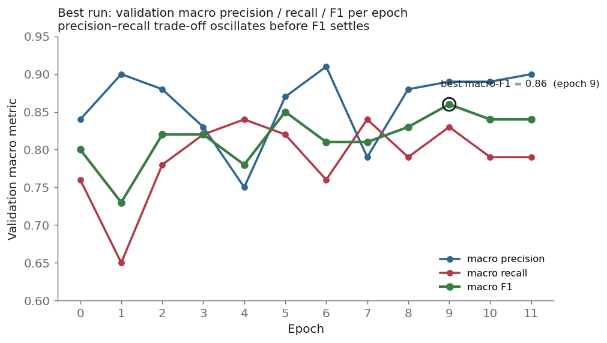

Can the microphone already in three billion pockets hear a failing heart before the symptoms arrive?
A research pipeline for early, pre-symptomatic screening of cardiovascular disease from phonocardiograms recorded on an ordinary smartphone. This is the record of what worked, what failed, and the two moments the project changed direction.
Cardiovascular disease is the leading cause of death worldwide. The paradox in the data is the entire argument for cheap, scalable screening.
Per-capita risk is falling. The absolute number of deaths keeps climbing.
That gap, between better treatment for those who reach a clinic and a growing population that never does, is exactly the space a triage instrument would occupy. Not a diagnosis. A signal that tells an asymptomatic person: you should see a clinician.
More than three quarters of CVD deaths now occur in low- and middle-income countries, where diagnostic infrastructure is thin. Roughly a third are premature, before the age of 70. A smartphone is the only sensor already there. If its microphone can register the first and second heart sounds, and the murmurs that ride between them, the marginal cost of one more screening approaches zero.

One physical fact shaped every decision that followed. Pressed to the chest, the microphone records vibration that has already propagated through skin, fat, muscle, and the thoracic wall, a layered viscoelastic low-pass filter.
If s(t) is the acoustic source at the valve and htissue the impulse response of the propagation path, the captured signal is approximately a convolution plus two noise terms: airborne environmental leakage, and friction from the skin-to-device interface.
The diagnostic energy of heart sounds lives in a narrow low band, roughly 20 to 200 Hz. S1, the mitral and tricuspid closure, sits slightly lower and longer than S2, the aortic and pulmonic closure. Two consequences separate this task from mainstream audio machine learning.
Domain shift is severe. Models pretrained on speech and environmental sound learned a wide-band, airborne, semantically rich signal. Ours is band-limited, tissue-filtered, quasi-periodic, and semantically sparse. Transfer offers little and can mislead.
Acquisition is part of the model. Because the tissue response and the noise terms are fixed at capture time, controlling how the recording is made is a first-class lever on accuracy, not preprocessing hygiene.
Short-time Fourier magnitude, for the stationary harmonic structure of the cardiac cycle.
Perceptually weighted bands following the cochlear frequency map, the primary front end.
Continuous wavelet transform, for high temporal resolution on murmur onsets and transients.
The classifier resolves every recording into three clinically meaningful classes. Pick one to see its waveform morphology and the model's real validation performance on that class.
Healthy. A regular lub-dub with a silent interval. The model separates this class cleanly: recall 0.945 means few true healthy recordings are missed.
Heart-sound data is chronically scarce. The one public set we could build on arrived broken: label-to-audio mapping lost, sample rates heterogeneous, no metadata. Rebuilding it was unglamorous work that mattered more than any model change.
We recovered the label mapping, standardised every file to a canonical rate and container, and enriched each recording with provenance metadata. That cleaned artifact became the Dangerous Heartbeat Dataset. Then, when architecture stopped paying off, we treated data volume as the primary problem and merged the PhysioNet/CinC 2016 database.

| Generation | Source | Records | Label distribution |
|---|---|---|---|
| DHDataset | PASCAL / Kaggle + field recordings | 585 | normal 351 · murmur 129 · extrastole 46 · extrahls 19 · artifact 40 |
| PhysioNetDataset | PhysioNet/CinC 2016 | 3,240 | normal 2,575 · abnormal 665 |
| CardionixDataset | merged and harmonised | 3,825 | normal 2,926 · abnormal 859 · artifact 40 |
One limitation stated up front: the source corpora carry no subject identifiers, so patient-level splitting was impossible. Reported scores are optimistically biased relative to a subject-disjoint evaluation.
We chose not to fine-tune large pretrained audio backbones. The domain shift is too severe, the corpus too small, and lightweight models make the real question, how the signal should be represented, an order of magnitude cheaper to iterate.
A 1-D convolutional encoder learns a filterbank over the raw waveform; a stacked LSTM models the systole–diastole rhythm; a dense head emits logits.
A BiLSTM feeds a pre-activation ResNet-18; a DenseMixer fuses the audio branch with a tabular branch of questionnaire-style features.
Each recording is rendered as a three-channel STFT + Mel + Morlet-wavelet image, passed through ResNet-18, then tokenised for a Transformer encoder.
The first serious runs used the full five-class taxonomy. They failed in an informative way. The rarest classes, starved of data, collapsed to near-zero recall.
Merging murmur, extrasystole, and extra heart sound into a single abnormal class recovered +0.27 macro-F1. Toggle to compare.


Honest note: the logged multi-class ROC-AUC reads a constant 0.4000 across every run. A metric that does not move with model quality is not measuring it. We treat this as an instrumentation bug and do not report ROC-AUC as a result.
Once the taxonomy was fixed, further changes to depth and width stopped producing gains. The learning curves plateaued. The binding constraint was no longer model capacity. It was the representation and volume of the signal.
So we stopped adding layers and started interrogating the waveform. To experiment on filters, denoisers, and quality measures at speed, that work did not belong inside a training pipeline. We factored it out into a standalone library, and the diagnosis became a data-centric method.
A focused PCG toolkit: zero-phase Butterworth bandpass over the cardiac band, three interchangeable denoisers including Donoho–Johnstone wavelet shrinkage, and quality metrics that each carry an explicit trust level.
A Streamlit bench that turns "test a preprocessing hypothesis" from a code edit into a slider. It shows the signal before and after a configurable chain: waveform, spectrograms, an audio player, and the cardiobit metrics.
One methodological point generalises beyond any single setting. Under a data-constrained regime, improving acquisition quality is a more effective lever than adding model capacity. It is cheaper to record better than to learn harder.
We deliberately did not advance this toward clinical use. Medical triage carries an asymmetric error cost that demands a separate validation regime this research prototype does not provide.
Source corpora lack subject IDs, so recordings from one person may fall on both sides of the split. Reported scores are optimistically biased.
At 3,825 records the corpus is modest for a medical task, and the artifact class is scarce at 40 labelled, which caps its recall.
Labels are not confirmed by echocardiography or ECG. "Abnormal" means abnormal-sounding, not a verified pathology.
The model has not been evaluated on an independent cohort collected under different conditions.
Predicted probabilities were not calibrated and uncertainty was not estimated. For a referral decision, this is essential and currently absent.
The ROC-AUC logging path is broken and was not used. It is flagged for repair before the next round.